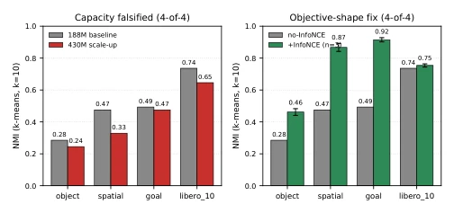
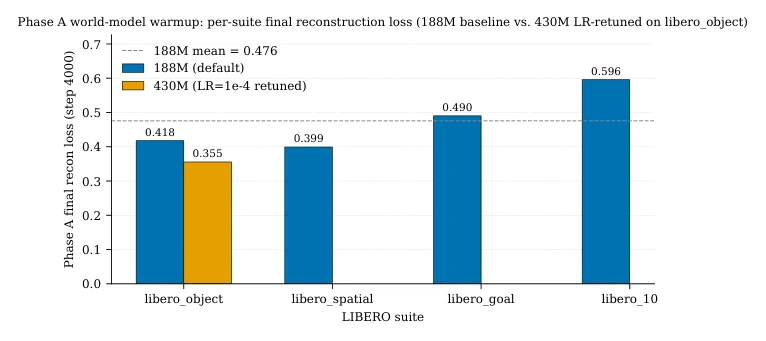
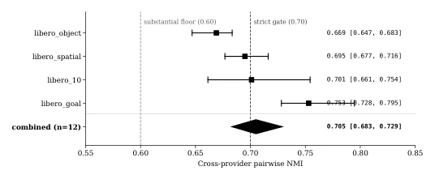
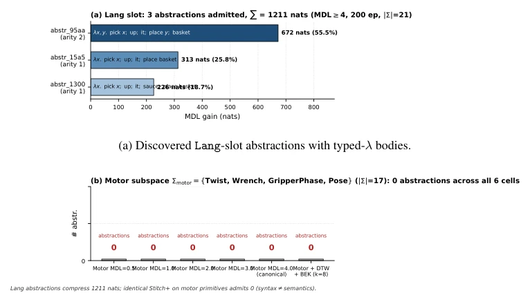

Figure 1: REFACTOR-VLA architecture. The latent world model Mϕ provides the ground-truth dynamics using a frozen DINOv2 encoder and a DreamerV3-style hierarchical posterior and prior. The Behavioral-Equivalence Kernel (BEK) groups trajectory fragments using a value-plus-Wasserstein divergence. The Siamese amortizer kχ is distilled from Mϕ. The Typed Program Emitter (TPE) generates type-checked lambda terms; the Library-Conditioned Action Decoder (LCAD) is a rectified- flow head. The driver runs three steps per outer iteration t: the wake phase (TPE and LCAD), the sleep phase (the BEK head), and the library-refactor phase (grammatical anti-unification with joint MDL and return-preservation gates).
Figure 2: Phase C 4-suite × 4-supervision NMI grid. Bars show mean held-out NMI; whiskers denote ±1σ across n=3 seeds where applicable. The task_index-supervised upper bound (left bars) brackets the Mϕ-distilled cells; +InfoNCE (third bars) recovers 26–98.5% of the upper-bound gap on every suite.

Figure 3: Twin claim: capacity vs. objective shape. Left: 430M Phase C regresses on 4-of-4 suites (red) at fixed objective. Right: adding the auxiliary InfoNCE term to the 188M Phase A objective lifts 4-of-4 suites (green) at fixed capacity.

Figure 4: Phase A Mϕ final-step loss across the four LIBERO suites. Blue: 188M baseline. Orange: 430M LR-retuned (LR=1×10−4), available on libero_object_image only. Numbers above each bar are the headline final loss. The 430M LR-retune dominates the 188M baseline on object (0.3555 vs. 0.4176); the short-horizon suites cluster in [0.40, 0.49]; the long-horizon libero_10 cell sits ≈0.16 above the short-horizon minimum.

Figure 5: Forest plot of cross-provider seed convergence at n=12 pairs. Per-suite point estimates with n=3 bootstrap intervals; combined diamond = 0.705, 95% CI [0.683, 0.729]. Dashed lines: 0.70 strict gate, 0.60 substantial floor. The combined CI is borderline against 0.70 and robustly above 0.60.

Figure 6: Library learning panel. Top: language abstractions. Bottom: motor subspace sweep.